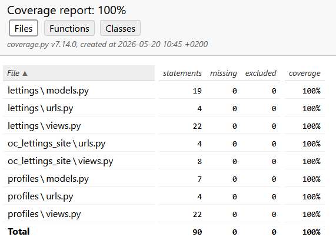

Quality
Testing
This Django project uses the Pytest library for testing the application.
Each Django app has a testing package with commonly 3 testing modules (for models, urls, and views) and a test fixture module conftest.py.
We guarantee 100% test coverage for the Orange County Lettings application in its new version.

Environment configuration
In the env virtual environment, you must install Pytest library if not already installed as explained in the installation section.
pip install pytest
poetry add pytest
uv add pytest
Tests coverage
To complete the test process, the pytest-cov library is used to generate a coverage report.
To generate another report, you must install pytest-cov before. Please use the same procedure as above for pytest.
Tests local execution
To generate another test process in your terminal, please type the line below :
pytest -v --cov=lettings --cov=profiles --cov=oc_lettings_site --cov-report=html:cov_html
Automatic tests execution
The Orange County Lettings application uses a CI/CD pipeline (detailed in deployment section) that automatically runs tests during the continuous integration task.
This pipeline uses a setup.cfg file containing the test command that generates a new report after each commit and push to your Git platform.
Linting
This Django project uses the Flake 8 linter that ensures you to implement an always-standardized code and according to the PEP 8 convention.
Environment configuration
In the env virtual environment, you must install Flake 8 library if not already installed as explained in the installation section.
pip install flake8
poetry add flake8
uv add flake8
Flake 8 report
To complete the flake 8 process by adding an HTML report, the flake8-html library is used to.
To generate another report, you must install flake8-html before. Please use the same procedure as above for flake8.
Flake 8 local execution
To generate another flake 8 linting process in your terminal, please type the line below :
flake8 --format=html --htmldir=flake8-report --max-line-length=119 --extend-exclude="env/, env-docs/"
Automatic linting
The Orange County Lettings application uses a CI/CD pipeline (detailed in deployment section) that automatically runs Flake 8 linter during the continuous integration task.
This pipeline uses a setup.cfg file containing the Flake 8 command to generate a new report after each commit and push to your Git platform.